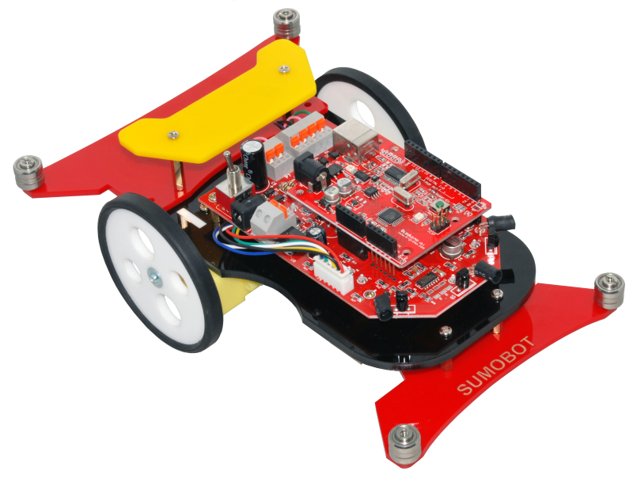

Javascript Everywhere
by Dzmitry Gerasimov
Expected
Actual
Leap Motion
Handmade Demo
Flying Arms
Tessel.io
Modules
Hardware
System
Demo time
Tessel demoParrot AR.Drone 2.0

Technical Specifications
- 1GHz 32 bit ARM Cortex A8 processor with 800MHz video DSP TMS320DMC64x
- Linux 2.6.32
- 1GB DDR2 RAM at 200MHz
- USB 2.0 high speed for extensions
- Wi-Fi b g n
- 3 axis gyroscope 2000°/second precision
- 3 axis accelerometer +-50mg precision
- 3 axis magnetometer 6° precision
- Pressure sensor +/- 10 Pa precision
- Ultrasound sensors for ground altitude measurement
- 60 FPS vertical QVGA camera for ground speed measurement
Connection
192.168.1.1
ports
- 21 - ftp
- 23 - telnet
- 5554 - udp - navdata
- 5555 - tcp - video
- 5556 - udp - at
AT Commands
AT Commands
'AT*REF=0,512\r' +
'AT*PCMD=1,0,0,0,0,0\r'
According to tests, a satisfying control of the AR.Drone is reached by sending the ATcommands every 30 ms for smooth drone movements. To prevent the drone from considering the WIFI connection as lost, two consecutive commands must be sent within less than 2 seconds.
Take Off
dgram = require 'dgram'
socket = dgram.createSocket 'udp4'
seq = 0
flying = false
emergency = false
setInterval ->
ref = (flying << 9) | (emergency << 8)
commands = [
"AT*REF=#{seq++},#{ref}"
"AT*PCMD=#{seq++},0,0,0,0,0"
].join('\r') + '\r'
buffer = new Buffer commands
socket.send buffer, 0, buffer.length, 5556, '192.168.1.1'
, 30
node-ardrone
GithubDo something
var arDrone = require('ar-drone');
var client = arDrone.createClient();
client.takeoff();
client
.after(5000, function() {
this.clockwise(0.5);
})
.after(3000, function() {
this.stop();
this.land();
});
REPL
var arDrone = require('ar-drone');
var client = arDrone.createClient();
client.createRepl();
navdata
var arDrone = require('ar-drone');
var client = arDrone.createClient();
client.on('navdata', console.log);
ardrone-webflight
GithubSuper Hero
Questions